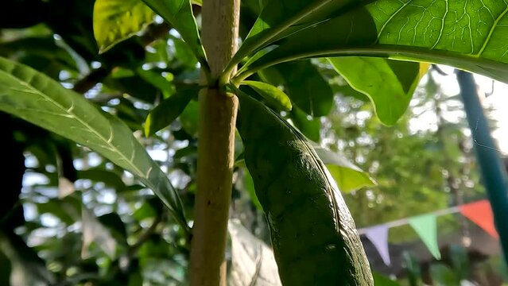
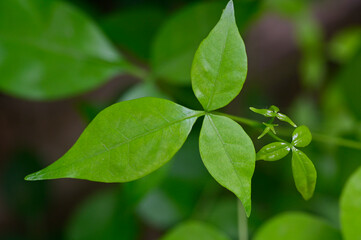
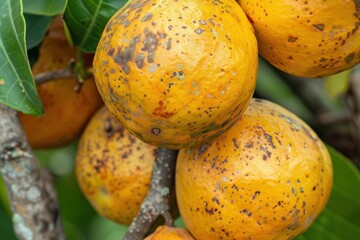

Neem is widely distributed across tropical and subtropical regions, particularly in:
India: Common in plains and lower hills, particularly in northern, central, and southern India. States like Uttar Pradesh, Bihar, Jharkhand, Madhya Pradesh, and Odisha have significant populations of Bael trees.
Southeast Asia: The Bael tree is also found in countries like Sri Lanka, Nepal, Myanmar, and Thailand.
The Bael tree is hardy and can grow in various types of soil, from sandy to clayey, including rocky soils. It prefers a subtropical to tropical climate and can withstand extreme temperatures, from hot summers to cold winters. It is drought-resistant and can grow in arid and semi-arid regions.



Medicinal Uses
Bael has a wide range of medicinal uses in Ayurveda and other traditional medicine systems:
Digestive Health: Bael fruit is known for its digestive properties. The unripe fruit is used to treat diarrhea and dysentery, while the ripe fruit acts as a mild laxative and is used to treat constipation. The leaves and roots are also used for various digestive disorders.
Diabetes Management: Bael leaves have anti-diabetic properties and are used to regulate blood sugar levels. Consuming Bael leaf juice is a common remedy for diabetes in traditional medicine.
Respiratory Health:Bael is used to treat respiratory problems such as asthma, bronchitis, and colds. The leaves, in particular, are used in various herbal formulations for respiratory relief.
Detoxification: Neem is believed to purify the blood and support liver function,
promoting
overall detoxification.
Antimicrobial Properties: Bael has strong antimicrobial properties, making it effective in treating infections. It is used for treating ulcers, wounds, and skin infections.
Heart Health: The Bael fruit is known to have cardioprotective properties. Regular consumption of Bael fruit juice is believed to strengthen the heart and improve cardiovascular health.
Methods of Cultivation
Climate and Soil Requirements: Bael is a hardy tree that thrives in a wide range of climatic conditions. It grows well in subtropical and tropical regions with an annual rainfall of 500-1200 mm. The tree can withstand both drought and waterlogged conditions, though it prefers well-drained soils. It can grow in sandy, loamy, or clay soils, but well-drained sandy loam soil with a pH of 6.0 to 7.5 is ideal.
Propagation: Bael trees can be propagated through seeds or vegetative methods like root cuttings, air layering, or grafting. Seed propagation is the most common method, but vegetative propagation ensures true-to-type plants with better yield. Seeds should be soaked in water for 24 hours before planting to improve germination.
Planting: The best time to plant Bael saplings is at the beginning of the rainy season. The plants should be spaced about 6-8 meters apart to allow enough room for growth. Proper pit preparation with organic manure or compost is essential to ensure healthy growth.
Watering: Young Bael trees require regular watering during the initial stages of growth, especially during dry periods. Once established, Bael trees are highly drought-resistant and require minimal watering. Overwatering should be avoided as it can lead to root rot.
Pruning: Regular pruning is not necessary, but removing dead, diseased, or damaged branches can improve the tree’s appearance and health. Light pruning can also help shape the tree and promote better air circulation.
Pest Control:Bael trees are generally resistant to pests and diseases. However, they can be affected by aphids, fruit borers, and fungal infections. Regular monitoring and the use of organic pesticides like neem oil can help control these issues. Ensuring good drainage and avoiding waterlogging reduces the risk of fungal infections.
Harvesting: Bael trees start bearing fruit after 5-6 years, with full productivity reached in about 10 years. The fruits are harvested when they are fully mature, which is indicated by a yellowish-green color and a hard outer shell. The fruits can be stored for several months at room temperature, making them suitable for both fresh consumption and processing.